第六讲 不定方程解应用题
大家已学过简单的列方程解应用题，一般都是未知数个数与方程的个数一样多，例如中国古代著名的“鸡兔同笼”问题。
如果方程（组）中未知数的个数多于方程的个数，此方程（组）称为不定方程（组）。
小学阶段主要是涉及整系数不定方程的整数解.试看一些例。
例1 有三张扑克牌，牌的数字互不相同，并且都在10以内.把三张牌洗好后，分别发给甲、乙、丙三人.每人记下自己牌的数字，再重新洗牌、发牌、记数.这样反复几次后，三人各自记录的数字和分别为13、15、23.请问这三张牌的数字是什么？
分析 设三张牌为x、y、z（x＞y＞z）.再设共发牌n轮（每轮发3张）.记作x+y＋z＝S。
n·S＝13＋15＋23=51。
由于n和S都是整数，51＝3×17.只有n=3，S=17.现在转变为不定方程：x＞y＞z且10＞x＞y＞z≥1的条件下：
x+y＋z＝17
求整数解。
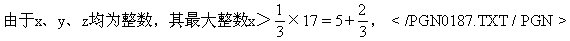
即x≥6.x可能值为6、7、8、9。
第一种情况，x=6＞y＞z，而y+z=17-6=11，而此时y+z最多为5+4.所以x≠6。
第二种情况，x=7＞y＞z，y＋z=17-7=10，只有y=6，z=4.但是丙三次牌数字和为23，而23显然不可能表示为｛7，6，4｝中任意三个（可以重复的，下同）数之和。
第二种情况x=7亦被排除。
第三种情况，x=8＞y＞z，y＋z＝17-8=9，（y，z）可能情况有（7，2）；（6，3）；（5，4）。
而13（甲三次牌数字和）不能表示为｛8，7，2｝中任意三个数之和，23不能表示为｛8，6，3｝和｛8，5，4｝中任意三个数之和，故x=8亦被排除。
第四种情况，x=9＞y＞z，y＋z=17-9=8，观察知y=5，z=3.（可排除｛9，7，1｝和｛9，6，2｝.）
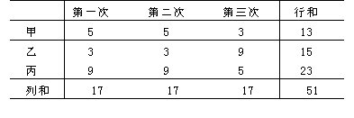
综上所述，三张牌为3、5、9。
例2 采购员用一张1万元支票去购物.购单价590元的A种物若干，又买单价670元的B种物若干，其中B种个数多于A种个数，找回了几张100元和几张10元的（10元的不超过9张）.如把购A种物品和B种物品的个数互换，找回的100元和10元的钞票张数也恰好相反.问购A物几个，B物几个？
解：设购A种物x个，购B种物为x+y个，并设第一次购物找回r张100元，s张10元，则
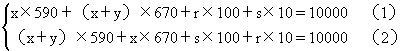
这是4个未知数，2个方程的不定方程组.解方程时，方程变形的一些法则（方程两边同时乘或除以不为0的数，方程不变；方程两边同时加或减一个数，方程不变）仍适用.先将（1）（2）两边约去10，得
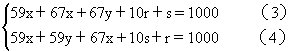
由于（3）（4）式的右边都等于1000，因此它们相等，整理后得8y＋9r-9s=0，
再在方程两边同时加上9s-9r，得：
8y＝9（s-r） （5）
由于y是大于0的整数，所以s-r也是整数＞0。
因此8｜9·（s-r），9｜8y。
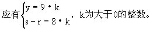
但是s是10元钱的张数，s≤9，r是100元钱的张数，所以k=1，因此y=9，s-r=8.显然s=9，r=1。
代回（3）式：得到x=3。
所以：x=3，x+y=3+9＝12，r＝1，s=9.采购员购A物3件，B物12件，找回1张100元，9张10元。
这两个例题已综合地体现了不定方程的“风味”。
例3 现有3米长和5米长钢管各6根，安装31米长的管道，问怎样接用最省料？
解：设3米长用x根，5米长用y根，列成不定方程：
3x＋5y=31.分两种思路求解
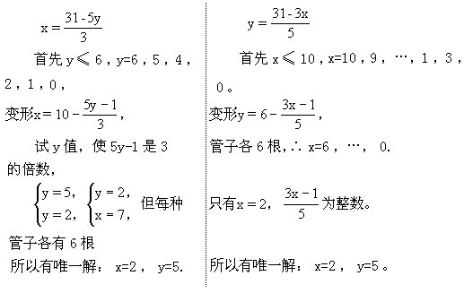
答：用3米长的2根，5米长的5根。
用同余的知识解不定方程时，可以表达得简明清楚些。
例4 55人去游园划船，小船每只坐4人，大船每只坐7人，问要租大、小船各多少只？
解：列不定方程，设大船x只，小船y只。
7x＋4y=55。
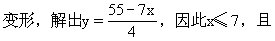
55-7x≡0（mod 4）；
因此 7x≡55（mod 4）≡3（mod 4），
但7≡3（mod 4），所以x≡1（mod 4），
因此x＝1，或x=5。
所以有 x=1，y=12以及x=5，y＝5两组解。
例5 王虎用100元买油菜籽、西红柿种子和萝卜籽共100包.油菜籽每包3元，西红柿种子每包4元，萝卜籽1元钱7包，问他每种各买了多少包？
解：设买油菜籽x包，西红柿种子y包，则萝卜籽（100-x-y）包，列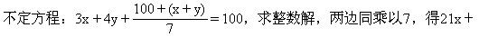
28y+100-x-y＝700，也即20x+27y＝600。
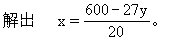
因此y≤22.由于600≡0（mod 20），所以27y≡0（mod 20）；但（27，20）=1，所以y≡0（mod 20）。
因此y＝20，x=3，100-x-y＝77。
答：购油菜籽3包，西红柿种子20包，萝卜籽77包。
例6 100匹马驮100筐物品，一匹大马驮3筐，一匹中马驮2筐，两匹小马驮1筐.问大、中、小马各多少？
解：设大、中、小马的匹数依次为x、y、z，由题意，列不定方程为：
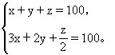
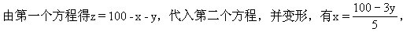
因此y≤33.由于5|100，所以5|3y.y＝0，5，10，…，30.相应地可以得到x和z.但（3，5）=1，所以5|y.因此把结果列出：
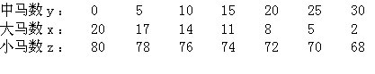
以上讲了6个例子，解不定方程（组）的一般思路和步骤都体现在其中了.这讲介绍的是最基本的整系数整式不定方程求整数解.总之，它要调用解方程时的常用的方程变形公共原则，又时时巧用未知数是整数这一“约定”.当然还有许多其他技巧.至于其他形式的不定方程，如x2＋y2=25；奇质数p，
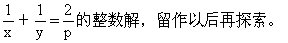